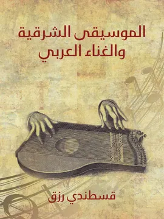

الموسيقى الشرقية والغناء العربي

قراءة عربية أصلية محددة النطاق في الصفحات 13 إلى 18 من ملف PDF المرتبط، وليست تلخيصا كاملا للكتاب. نناقش ما تدعمه هذه المقاطع فقط.
الموسيقى الشرقية على مفترق طريقين
يفتتح قسطندي رزق كتابه بمقدمة يروي فيها أنه أُشرب محبة المرحوم عبده الحمولي منذ نعومة أظفاره، يوم خالط والده بالزقازيق وغنى لهم غناءه العربي، فارتسمت في ذهنه صورة العروبة الفخمة حتى كان الحمولي حريًّا أن يُكنى بغريد الشرق، وأخذ منذ ذلك الحين يشعر بتيار موسيقى يتمشى في عروقه حتى أضحى من المولعين بالغناء العربي وقد حاز ملكة التمييز بين جيده ورديئه. ولما هب على الموسيقى العربية عاصف التجديد يحاول اقتلاع جذورها، شمر لصد التيار غيرة على عظمتها، إذ هي واقفة على مفترق طريقين: فإما أن تحيا وتستعيد ماضي شبابها إذا تداركها أولو الأمر، وإما أن يسجل عليها الموت إذا أُلقي حبل المجددين على غاربهم يرتضخون لكنة غربية بدلًا من النبر العربي. ويبين أنه لا يعارض التجديد المبني على الأصول بل يرحب به، لكن المجددين في واد ونواميس الموسيقى في واد؛ ولو راعوا الموازين الموسيقية والتوقيع بما يطابق معنى الأغنية، فالألحان القديمة، ولو اقتصر ملحنوها على نغمة أو أكثر، خير من الحديثة التي لا يتوفر فيها حسن التوقيع وضبط الإيقاع.
زاوية وحدود القراءة
قراءة موجزة من ص ١٣ إلى ص ١٨ من أصل ٢١٤ صفحة، تعرض مقدمة المؤلف وغرض الكتاب، لا الكتاب كاملًا.
الطبعة والقراءة
هذه النسخة من الكتاب صادرة ومتاحة مجانًا من مؤسسة هنداوي بشكل قانوني؛ حيث إن نص الكتاب يقع في نطاق الملكية العامة تبعًا لقوانين الملكية الفكرية.
تنزيل PDF المجاني ↓ القراءة والمصدر الرسمي ↗